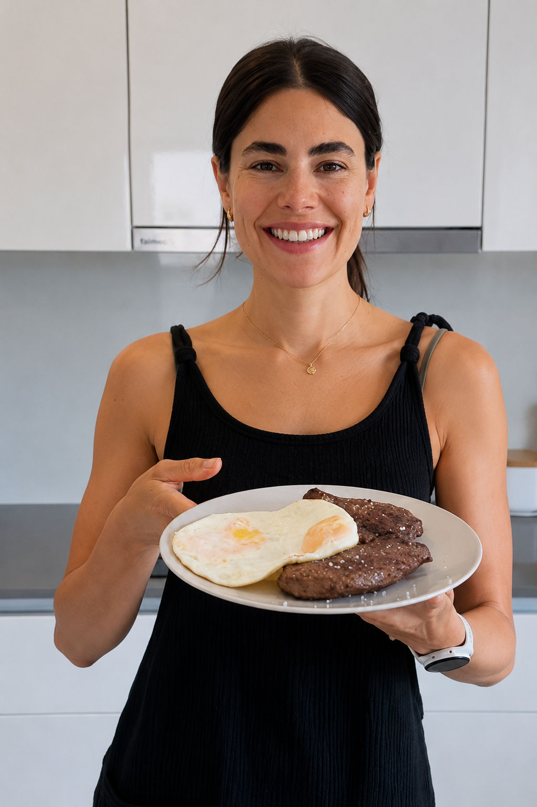

Neste breve video, a Giovanna Paino revela o metodo exato que ela usou para eliminar mais de 25kg apos a gravidez e como ajudou mais de 5.000 mulheres a alcançar o emagrecimento de forma duradoura e sem efeito rebote. Assista antes que saia do ar.
Acesso imediato apos a confirmacao